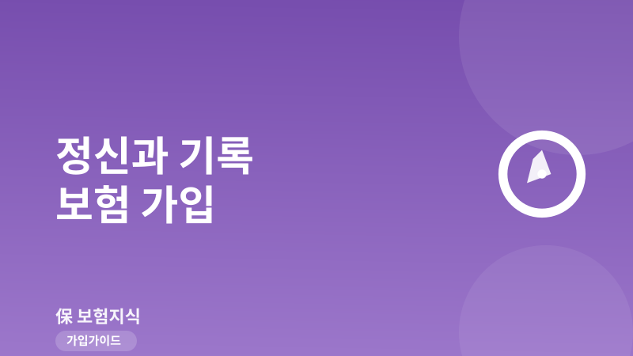
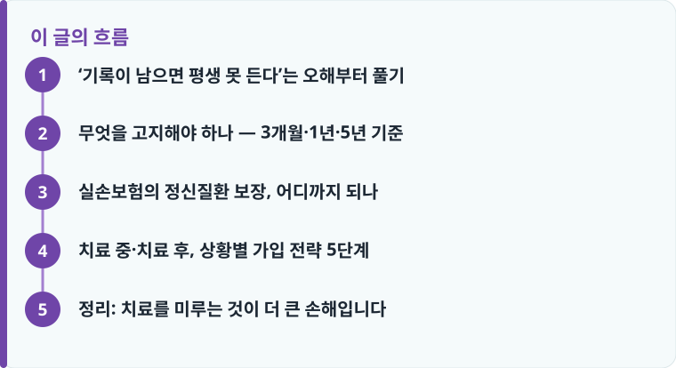

정신과 진료 기록이 있다고 모든 보험이 자동 거절되는 것은 아닙니다. 상태·진단명·치료 기간·투약 여부에 따라 표준 인수, 부담보·할증 같은 조건부 인수, 거절로 나뉩니다.
고지 대상은 청약서가 묻는 항목뿐입니다. 최근 3개월 진찰·투약, 1년 이내 재검사 소견, 5년 이내 입원·수술·장기 치료·투약·특정 질병 진단 등이 대표 질문입니다.
고지 대상에 해당하면 사실대로 알려야 하며, 숨기면 계약 해지·보험금 부지급 위험이 있습니다. 반대로 청약서가 묻지 않는 것은 고지하지 않아도 됩니다.
‘기록이 남으면 평생 못 든다’는 오해부터 풀기
우울감이나 불안, 불면으로 정신건강의학과를 찾으려다 “진료 기록이 남으면 앞으로 어떤 보험도 못 든다더라”는 말에 발길을 돌리는 분이 적지 않습니다. 결론부터 말하면 이 말은 지나치게 단정적입니다. 정신과 진료 이력이 있다는 사실 하나만으로 모든 보험 가입이 자동으로 거절되지는 않습니다. 보험사는 진료가 있었다는 사실 자체가 아니라, 어떤 상태를 어떤 진단명으로 얼마나 오래, 어떤 약을 쓰며 치료했는지를 종합해 위험을 평가합니다.
그 결과는 크게 세 갈래로 나뉩니다. 첫째, 아무 조건 없이 받아 주는 표준 인수입니다. 가벼운 단기 상담이나 일시적 불면처럼 위험이 낮다고 판단되면 그대로 통과되는 경우도 많습니다. 둘째, 특정 부위·질환을 일정 기간 보장에서 빼는 부담보나 보험료를 얹는 할증 같은 조건부 인수입니다. 셋째, 현재 증상이 심하거나 재발·자살위험 등 심사상 위험이 높다고 보면 거절입니다. 즉 ‘된다/안 된다’의 이분법이 아니라, 내 상태가 이 스펙트럼 중 어디에 있는지를 가늠하는 것이 훨씬 현실적인 접근입니다.
무엇을 고지해야 하나 — 3개월·1년·5년 기준
많은 두려움이 ‘내 진료 기록을 보험사가 다 뒤져 본다’는 오해에서 옵니다. 하지만 고지의무는 청약서(계약 전 알릴 의무 질문표)가 묻는 항목에 대해서만 사실대로 답할 의무입니다. 묻지 않은 것을 스스로 찾아 밝힐 의무는 없습니다. 대표적으로 청약서는 최근 3개월 이내에 의사에게 진찰·검사를 받았거나 치료·투약을 받은 적이 있는지, 최근 1년 이내에 추가검사(재검사)를 받으라는 소견을 들은 적이 있는지, 최근 5년 이내에 입원·수술을 했거나 7일 이상 계속 치료, 30일 이상 투약, 그리고 암·심장질환 등 특정 질병으로 진단·치료받은 적이 있는지를 묻습니다.
이 기간과 요건에 해당하는 정신과 진료라면 있는 그대로 고지해야 합니다. 예를 들어 두 달 전 불안장애로 약을 처방받았다면 3개월 이내 투약에 해당하고, 6개월간 우울증 약을 이어 복용했다면 30일 이상 투약이나 7일 이상 치료 항목에 걸립니다. 반대로 6년 전 짧게 상담만 받고 그 뒤 아무 진료가 없었다면, 청약서가 묻는 기간을 벗어나 고지 대상이 아닐 수 있습니다. 핵심은 ‘질문에 해당하는가’이며, 애매하면 감추기보다 사실대로 적고 심사를 받는 편이 안전합니다. 고지 대상을 숨겼다가는 나중에 계약이 해지되거나 보험금이 지급되지 않을 수 있는데, 어떤 경우에 문제가 되고 어떤 예외가 있는지는 고지의무 위반과 예외에서 자세히 정리했습니다. 건강검진 결과가 가입에 어떻게 반영되는지는 건강검진과 보험 가입을 함께 보면 이해가 빠릅니다.
여기서 한 가지 알아 둘 개념이 진단코드입니다. 실제 질병 진단 없이 단순 심리상담만 받으면 진료기록이 질병 진단인 F코드(우울·불안 등 정신·행동 장애를 뜻하는 F04~F99)가 아니라 건강상담 등을 뜻하는 Z코드로 남기도 합니다. 두 코드는 성격이 다르고, 어떤 코드로 진료받았는지가 향후 가입·보장 판단에 영향을 줄 수 있으므로 자신의 기록을 이해해 두는 것은 분명 유용합니다. 다만 진단코드는 의사의 의학적 판단 영역입니다. 유리하게 보이려고 코드를 임의로 바꿔 달라고 요구하거나 조작할 대상이 아니며, 그렇게 해서도 안 됩니다.
작성·검수 기준
이 글은 특정 보험상품의 가입을 권유하기 위한 것이 아니라, 정신과 진료 이력이 있을 때 고지의무와 실손 보장이 실제로 어떻게 적용되는지에 대한 일반적인 기준을 설명하기 위해 작성했습니다. 진단명·치료 경과에 대한 의학적 평가와 인수 심사 결과는 개별 보험회사, 상품 약관, 담당 의사의 소견에 따라 달라질 수 있으며, 이 글은 특정인의 가입 가능 여부나 보장 결과를 단정하지 않습니다.
정확한 고지 범위와 보장 여부는 청약서의 질문 항목, 본인 증권의 약관과 상품설명서를 함께 확인하는 것이 가장 정확하며, 판단이 어렵다면 고지의무 위반과 예외 내용을 참고해 사실대로 고지하는 것을 권합니다.

실손보험의 정신질환 보장, 어디까지 되나
실손보험에서도 정신질환은 오래 오해받아 온 영역입니다. 과거에는 정신 및 행동 장애로 분류되는 질병(대체로 F04~F99 코드)이 실손 보장에서 대부분 제외됐습니다. 그러나 2016년부터 우울증, 불안장애, 조현병 등 일부 정신질환의 급여 진료가 실손 보장 대상으로 확대되면서, 관련 치료비를 실손으로 돌려받을 길이 열렸습니다. ‘정신과는 실손이 무조건 안 된다’는 인식은 이제 정확하지 않습니다.
다만 범위에는 분명한 경계가 있습니다. 보장은 국민건강보험이 적용되는 급여 부분을 중심으로 이뤄지고, 건강보험이 적용되지 않는 비급여 상담이나 일부 상병, 심리검사 등은 여전히 제외되거나 상품·가입 시점별로 다르게 취급됩니다. 또 4세대 실손은 급여 진료에도 20%의 자기부담이 있고 비급여는 별도 특약으로 30% 자기부담이 적용되는 구조여서, 같은 치료라도 가입한 세대와 약관에 따라 돌려받는 금액이 달라집니다. 본인 실손이 어떤 구조인지, 4세대로 바꾸는 것이 유리한지는 4세대 실손 전환에서 자기부담과 보장 범위를 비교해 판단하는 것이 좋습니다. 정리하면, 실손으로 정신과 급여 진료를 일부 보장받을 수 있지만 ‘모든 상담·검사가 다 된다’고 기대하기보다 급여·비급여 구분과 약관을 먼저 확인해야 합니다.
치료 중·치료 후, 상황별 가입 전략 5단계
중요한 것은 지금 내 상황에서 무엇을 할 수 있느냐입니다. 현재 치료를 이어 가는 중이라면 표준 심사에서 통과가 어려울 수 있는데, 이때는 고지 항목 자체가 적은 간편심사보험을 검토할 수 있습니다. 대신 보험료가 다소 높은 편이므로 표준 상품과 비교해 선택하는 것이 좋습니다. 치료가 종결되고 재발 없이 안정적으로 일정 기간이 지나면, 청약서의 3개월·5년 질문에서 벗어나는 항목이 늘어 표준 심사 통과 가능성이 올라갑니다. 아래 순서로 점검해 보세요.
- 내 진료가 청약서의 3개월·1년·5년 질문 중 어디에 해당하는지 기간과 요건부터 정리합니다.
- 진단명이 F코드(질병 진단)인지 Z코드(건강상담)인지, 투약·치료 기간이 얼마였는지 진료기록으로 확인합니다.
- 현재 치료 중이라 표준 인수가 어렵다면 고지 항목이 적은 간편심사보험을 대안으로 검토합니다.
- 실손이 필요하면 급여·비급여 구분과 자기부담 구조를 확인해 가입 세대와 상품을 정합니다.
- 애매한 항목은 감추지 말고 사실대로 고지한 뒤 심사를 받아, 나중에 계약 해지·부지급 위험을 없앱니다.
정리: 치료를 미루는 것이 더 큰 손해입니다
정신과 진료 기록이 있으면 무조건 보험을 못 든다는 말은 사실이 아닙니다. 결과는 상태와 진단명, 치료 기간, 고지 요건에 따라 표준·조건부·거절로 나뉘고, 실손도 2016년 이후 일부 급여 정신질환은 보장 대상입니다. 무엇보다 지금 치료가 필요한데 ‘기록’이 걱정돼 상담을 미루는 것이야말로 건강과 미래 가입 조건 양쪽에서 더 큰 손해가 될 수 있습니다. 필요한 진료는 제때 받고, 가입할 때는 청약서 질문에 사실대로 답하는 것이 가장 안전한 길입니다.
다른 보험 정보 글이 궁금하다면 보험지식 블로그에서 이어 읽어 보세요. 가입 전에는 반드시 약관과 상품설명서를 확인하는 것이 가장 안전한 방법입니다.